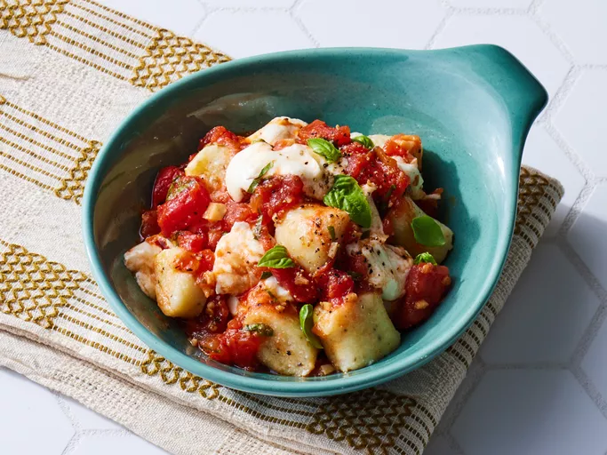

Home
Gnocchi

Description
Gnocchi are an Italian type of pasta, with potato gnocchi being the most common variety.
They have a light, pillowy texture and are typically boiled and served with a variety of sauces,
such as tomato, pesto, or butter and sage.
The name 'gnocchi' comes from the Italian word nocchio, meaning 'knot' or 'lump'.
Ingredients
- 3 medium russet potatoes, scrubbed
- 1 ½ cups all-purpose flour, plus more for dusting
- 1 large egg
- 1 teaspoon kosher salt
Steps
-
Cook the Potatoes: Place the scrubbed potatoes in a large saucepan and cover them with
2 inches of salted water. Bring to a boil over high heat, then reduce to medium-high and
simmer until fork-tender but still firm, about 25 to 30 minutes. Drain and return the
potatoes to the pot to dry for 5 to 10 minutes.
-
Peel and Mash: Once cool enough to handle, rub off the skins with your hands. Pass the
peeled potatoes through a potato ricer into a large bowl (or mash until completely smooth).
Let cool slightly for about 10 minutes.
-
Make the Dough: Gently fold in the flour, egg, and salt until just combined.
Transfer the dough to a lightly floured surface and knead briefly, about 1 to 2 times,
until smooth but not overworked.
-
Shape the Gnocchi: Divide the dough into 4 equal portions. Roll each portion into a
¾-inch thick rope. Cut into ½-inch pieces. (Optional: Roll each piece over the tines of a fork or
a gnocchi board for ridges.) Place the gnocchi on a floured, parchment-lined baking sheet
in a single layer.
-
Cook the Gnocchi: Bring a large pot of salted water to a boil. Working in batches, drop in
the gnocchi and cook for 3 to 4 minutes, or until they float to the surface. Use a
slotted spoon or spider to transfer them directly to your desired sauce.
-
Serve and Enjoy! Toss with your favorite sauce—such as tomato, pesto, or butter and
sage—and serve immediately.